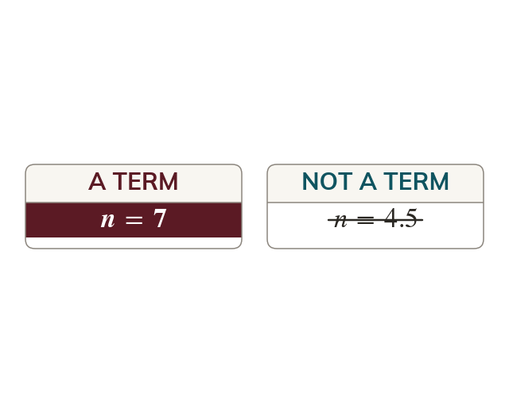

The rule read backwards
To test a value, set the rule equal to it and solve for The position must be a positive whole number. Otherwise the value is not a term.
Setting an nth term rule equal to a value turns it into an equation in n, and solving that equation is the whole of the membership test. What makes the answer meaningful is that n counts positions: it can only be a positive whole number. A solution that comes out negative, zero or fractional is not a smaller sort of membership - it means the value sits between the terms or before the sequence starts, and is not a term at all.